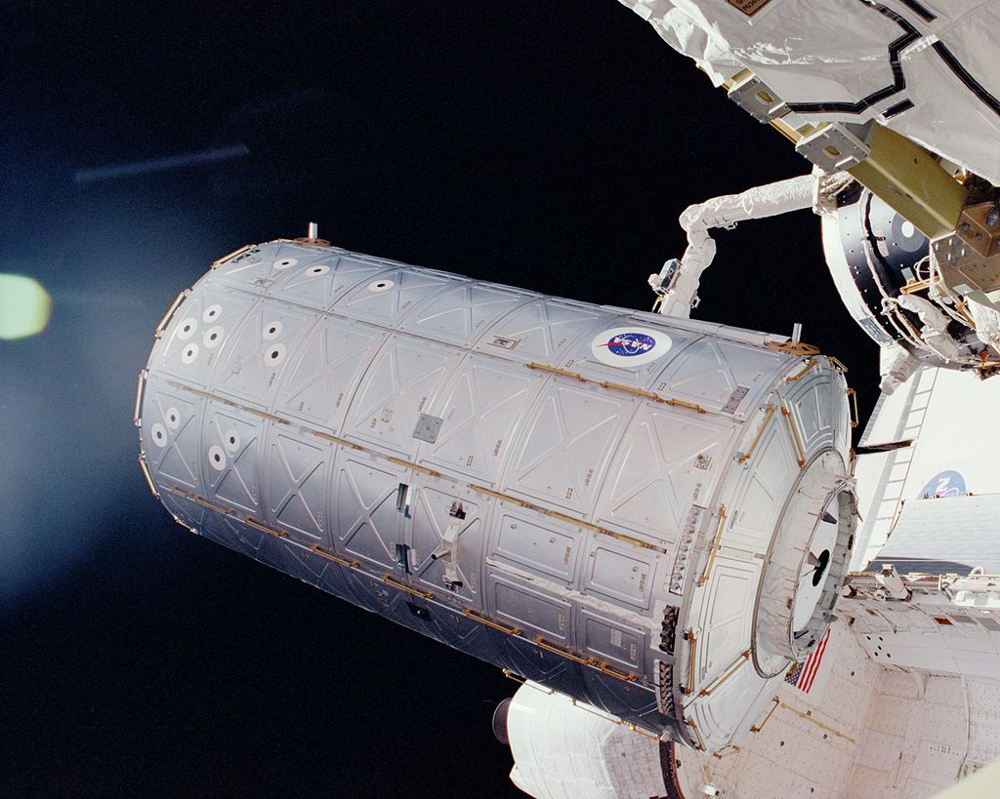

The U.S. Laboratory Module, called Destiny, is the primary research laboratory for U.S. payloads, supporting a wide range of experiments and studies contributing to health, safety, and quality of life for people all over the world. Science conducted on the ISS offers researchers an unparalleled opportunity to test physical processes in the absence of gravity. The resultsof these experiments will allow scientists to better understand our world and ourselves and prepare us for future missions. Destiny provides internal interfaces to accommodate 24 equipment racks for accommodation and control of ISS systems and scientific research.
